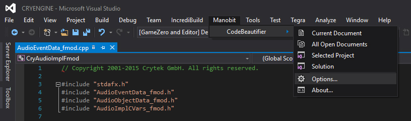
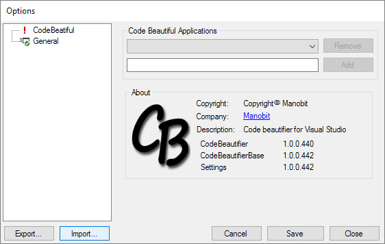
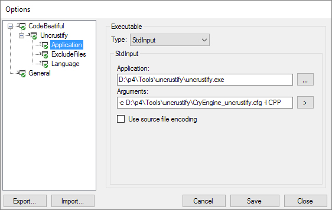

Introduction
With CRYENGINE V we have improved overall code quality and applied a new unified coding standard across all engine modules. This page describes the most convenient way of upgrading from a previous engine version (3.8.x) to the latest CRYENGINE V code base.
Recommendation
CRYENGINE 5.0.0 as it is available from the CRYENGINE Launcher currently, received code formatting by a tool called Uncrustify. We are currently still applying tweaks to the formatting, so we recommend waiting with a code upgrade until 5.1 has been released. It is planned to be available on GitHub within the next few weeks.
Auto-formatting in Visual Studio
By integrating Uncrustify with Visual Studio, it is possible to have your code auto-formatted in accordance with the guidelines every time you save your work, thus taking away any effort involved in complying with the standard.
Note that installing the "P4VS" plugin (Perforce plugin for Visual Studio) is strongly recommended.
Step 1: Get Uncrustify
Extract CRYENGINE_5.0.0_uncrustify.zip to your preferred location (default: D:\p4\Tools\uncrustify).
You can put this somewhere other than D:\p4\Tools\uncrustify, but this is the location assumed later on.
Step 2: Download "Code Beautifier" Extension
Download and install the "Code Beautifier" from the following page: Code Beautifier extension for Visual Studio 2015.
Step 3: Open Code Beautifier options

Step 4: Import settings
Click the Import... button, and navigate to D:/p4/Tools/uncrustify, then select CodeBeautifierSettings.xml.

Step 5: Save
All you have to do now is click Save and you're ready!
(Unless you didn't store Uncrustify under D:\p4\Tools\uncrustify. Then you will need to go to Uncrustify -> Application (see below) and edit the paths.)
